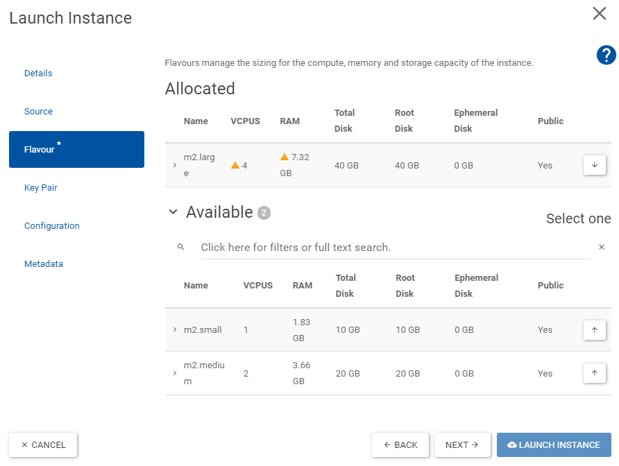

Virtual Machine CentOS Stream 8
This guide is very similar to Creating a CentOS CC7 Virtual Machine, yet focuses on the CentOS Stream 8 image, which comes with less pre-configuration, than CC7.
After this guide you will have a virtual CentOS Stream 8 machine, with afs, eos and htcondor enabled.
Create SSH Key pair
Create an ssh-public-private-key pair for authentication.
ssh-keygen -t rsa -f your-key-name
where your-key-name is the name you want to give your key, e.g. centos8key.
The keys will be saved in ~/.ssh/.
Create virtual machine
Go to CERN Openstack: Project -> Compute -> Instaces -> Launch Instance
-
On Details choose a cern-unique name for your instance. It will be available under
your-instance-name@cern.ch
-
On Source select the
CS8_x86_64image
-
On Flavour select the Volume and RAM size that you think you will need. 
-
On Key Pair select Import Key Pair and choose as
ssh-keythe in Step 1 created Public Key, e.g.centos8key.pub.
Now you have to wait until your instance is created, you can see the progress in the Project -> Compute -> Instances view.
When the Power State reads Running your machine is ready.
Create new User
Unlike in CC7 only the root user will be created.
-
Login to your virtual machine as this user via ssh:
wheressh -i your-key-name root@your-machine-name.cern.chyour-key-namefrom the examples above would becentos8keyandyour-machine-namewould bemycentoscs8. -
Create user with the same name as your cern name with sudo rights:
The password does not need to match your CERN password.export USERNAME=your-cern-username adduser $USERNAME passwd $USERNAME usermod -aG wheel $USERNAME -
Allow ssh-authorization for this user for the same ssh-keys
mkdir /home/$USERNAME/.ssh cp .ssh/authorized_keys /home/$USERNAME/.ssh/ chown -R $USERNAME:$USERNAME /home/$USERNAME/.ssh/
And you're done.
You will probably never use this root user again.
So log out now.
And you should now be able to login as:
ssh -i your-key-name your-user-name@your-machine-name.cern.ch
Disable SSH-Root-Login
For security reasons it might make sense now to deactivate ssh-login via root-user account.
Before you do this, make sure you can login as your-user-name and you have root-rights (e.g. sudo su works).
You can now disallow login as root by modifying (with sudo) the line in /etc/ssh/sshd_config
PermitRootLogin yes
PermitRootLogin no
systemctl restart sshd
SSH Config
To make your life easier you can add the following lines to your ssh-config ~/.ssh/config:
# connect to virtual machine from inside GPN
Host *your-machine-name
HostName your-machine-name.cern.ch
User your-user-name
IdentityFile path/to/your-ssh-key-name
# connect through proxy from outside GPN
Host ext*
ProxyJump lxtunnel.cern.ch
with the your-xxxx-names replaced accordingly.
This allows you to ssh into your machine simply with
ssh your-machine-name
ssh extyour-machine-name
Install afs/eos/etc.
This follows the installation hints found on the CERN centos step-by-step installation guide.
First install locmap which manages CERN installations and then let it install and reconfigure the CERN-default packages:
sudo dnf install locmap-release
sudo dnf install locmap
for module in afs eosclient chrony cvmfs kerberos lpadmin postfix ssh sudo; do sudo locmap --enable $module; done
sudo locmap --configure all
Now you should have access to afs, eos and kerberos (kinit and aklog).
Install HTCondor
This is adapted from the HTCondor installation guide on this webpage, but with some modifications.
First of all we don't need to install the kerberos packages, as this is done by locmap in the step above.
Configure KERBEROS
We only need to configure kerberos for HTCondor:
export USERNAME=your-user-name
scp $USERNAME@lxplus8.cern.ch:/usr/bin/batch_krb5_credential .
chmod +x batch_krb5_credential
sudo mv batch_krb5_credential /usr/bin/
scp $USERNAME@lxplus8.cern.ch:/etc/ngauth_batch_crypt_pub.pem .
sudo mv ngauth_batch_crypt_pub.pem /etc/
scp $USERNAME@lxplus8.cern.ch:/etc/krb5.conf.no_rdns .
sudo mv krb5.conf.no_rdns /etc/krb5.conf.no_rdns
scp $USERNAME@lxplus8.cern.ch:/etc/sysconfig/ngbauth-submit .
sudo mv ngbauth-submit /etc/sysconfig/
verify the installation via:
/usr/bin/batch_krb5_credential
There should be an output like:
-----BEGIN NGAUTH COMPOSITE-----
# LOTS OF LINES OF YOUR KEY
-----END NGAUTH COMPOSITE-----
and nothing else (i.e. no missing files or errors).
Make sure you have valid credentials already (run kinit).
Also see the debugging help.
Install HTCondor
This follows the guide in the develop branch on the HTCondor website.
The development brach is needed for now as CERN requires HTCondor v8.9.7+ as of June 2021.
sudo yum install wget
sudo wget https://research.cs.wisc.edu/htcondor/yum/RPM-GPG-KEY-HTCondor
sudo rpm --import RPM-GPG-KEY-HTCondor
cd /etc/yum.repos.d
sudo wget https://research.cs.wisc.edu/htcondor/yum/repo.d/htcondor-development-rhel8.repo
sudo yum install condor-all
Configure HTCondor
The configuration is then as in the default HTCondor guide.
-
Create the config file
/etc/condor/config.d/10-local.config. Please set as scheduler (SCHEDD_HOST) the default one you get onlxplus, e.g. in yourcondor_qoutput. You can also find it out by running (onlxplus):An example content is provided here:condor_config_val SCHEDD_HOSTCONDOR_HOST = tweetybird03.cern.ch, tweetybird04.cern.ch COLLECTOR_HOST = tweetybird03.cern.ch, tweetybird04.cern.ch SCHEDD_HOST = bigbirdXX.cern.ch SCHEDD_NAME = $(SCHEDD_HOST) SEC_CLIENT_AUTHENTICATION_METHODS = KERBEROS SEC_CREDENTIAL_PRODUCER = /usr/bin/batch_krb5_credential CREDD_HOST = $(SCHEDD_HOST) FILESYSTEM_DOMAIN = cern.ch UID_DOMAIN = cern.ch -
Start the service:
sudo systemctl start condor sudo systemctl enable condor -
Check:
See the debugging help.condor_q
Congratulations! You have now a very lxplus-like machine at your own disposal.